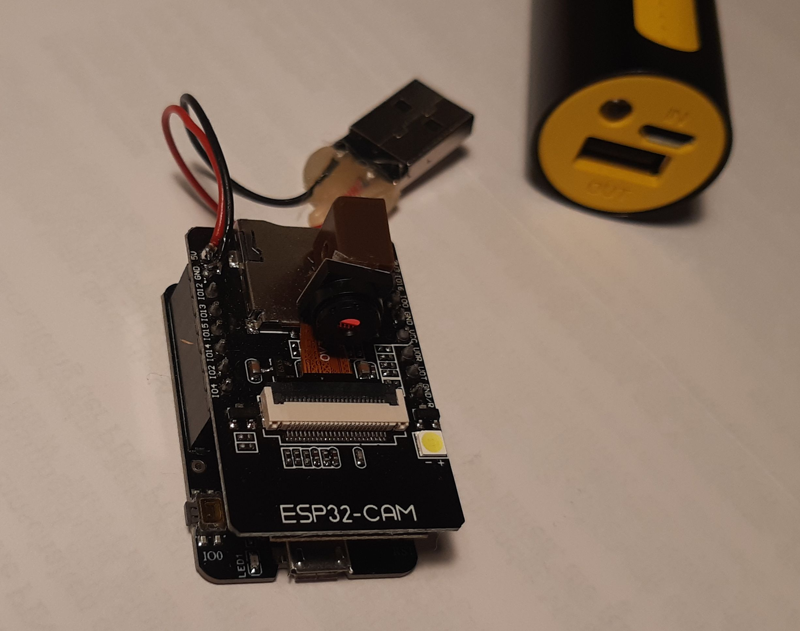
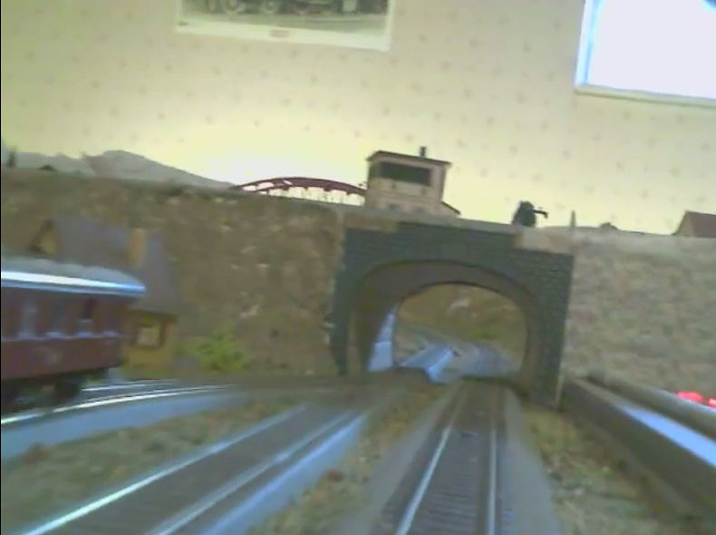

ESP32-Cam mit OV3660
ESP32-Cam mit OV3660 als Kamera Lok


Funktionsweise:
Ein Videostream wird von der kleinen Kamera über WLAN übertragen und kann in einem Browser (Firefox, Edge, Chrom,..) oder VLC, ... angezeigt werden.
Zeitgleich kann immer nur eine Verbindung zur ESP32-CAM aufgebaut werden. (Browser oder VLC, ...)
meine Kamera Lok, ist keine Lok, sondern ein Waggon welcher geschoben wird.
Inbetriebnahme:
problemlos, mit der aktuellen Arduino-IDE, unter Beispiele – ESP32 – Camera – CameraWebServer
Die Konfigurationen des Moduls kann über den Browser oder Script (siehe ausführliche Doku unten) erfolgen.
das ESP32-CAM Modul gibt es kostengünstig auf den bekannten Web Shops.
Stromversorgung:
Zur Stromversorgung der ESP32-CAM verwende ich eine Powerbank, welche in einem Waggon liegt.
Das Modul benötigt ca. 200 mA - 300 mA je nach Stream, 96x96 – 2048x1596, LED aus und bis zu 700 mA bei je nach LED Beleuchtung.
Sicherheit:
Es wird keine Verbindung ins Internet oder Cloud und auch keine APP benötigt, nur im lokalen Netz verfügbar.


meine Dokumentation: ESP32-CAM_Kamera_OV3660.odt (aktualisiert 02.2026)
- Inbetriebnahme ESP32-CAM mit der Arduino-IDE
- Konfigurationsmöglichkeiten der Kamera OV3660 per Browser oder Script
- Aufzeichnung eines Videostream mit VLC.
- Video zu einer .mp4 Datei konvertieren
Hier weitere Information zur ESP32-CAM (externe Links)
- ESP32 Cam Modul von https://www.fambach.net
- ESP32 Cam Modul Prilchen Labs
- Die ESP32-Cam als WLAN-IP-Kamera anschließen, einrichten und konfigurieren von Cool Web.de
Hier Information zum Nachfolger ESP32-S3-CAM (externe Links)
- Das ultimative ESP32-CAM-UpgradePrilchen Labs
- ESP32-S3-CAM: Camera Web ServerFreenove.com
- Nachfolger der ESP32-CAMhttps://draeger-it.blog